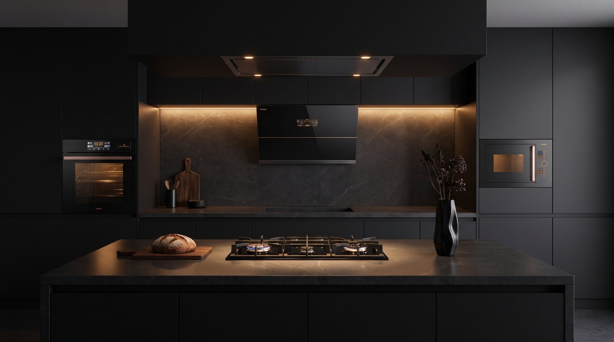
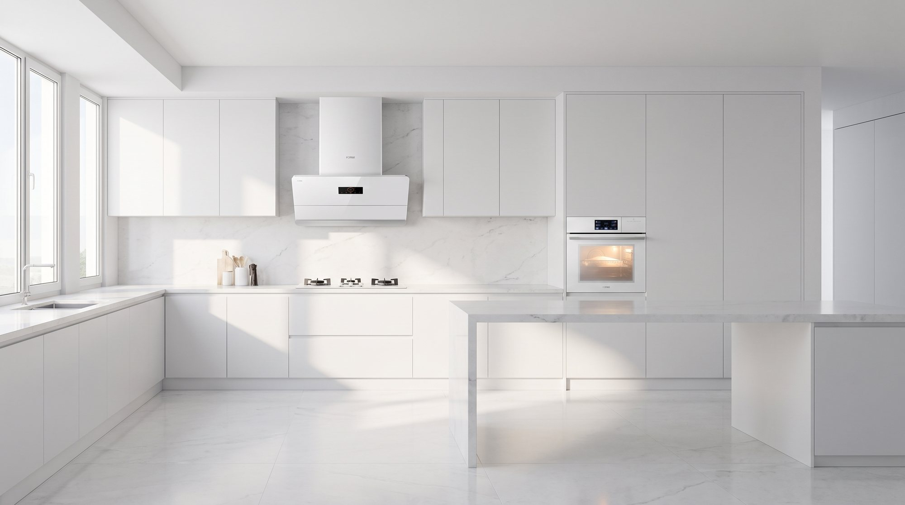
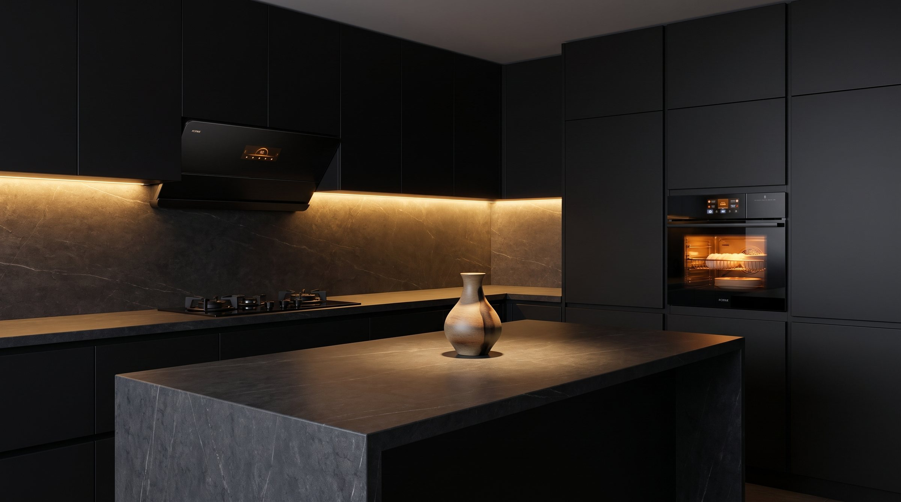
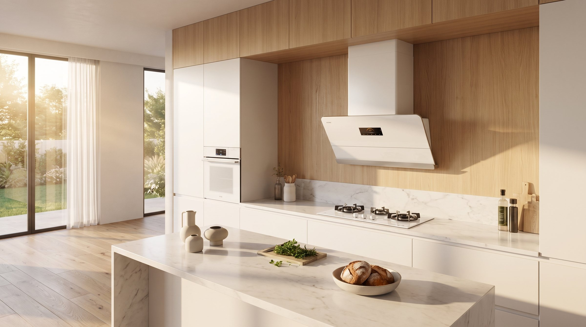
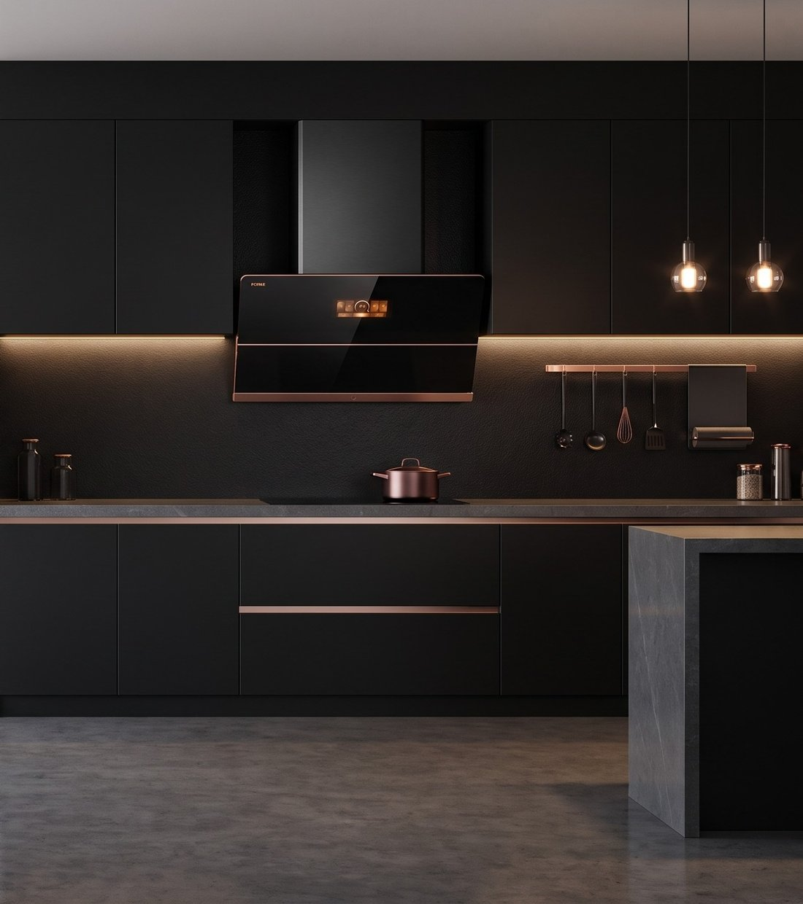
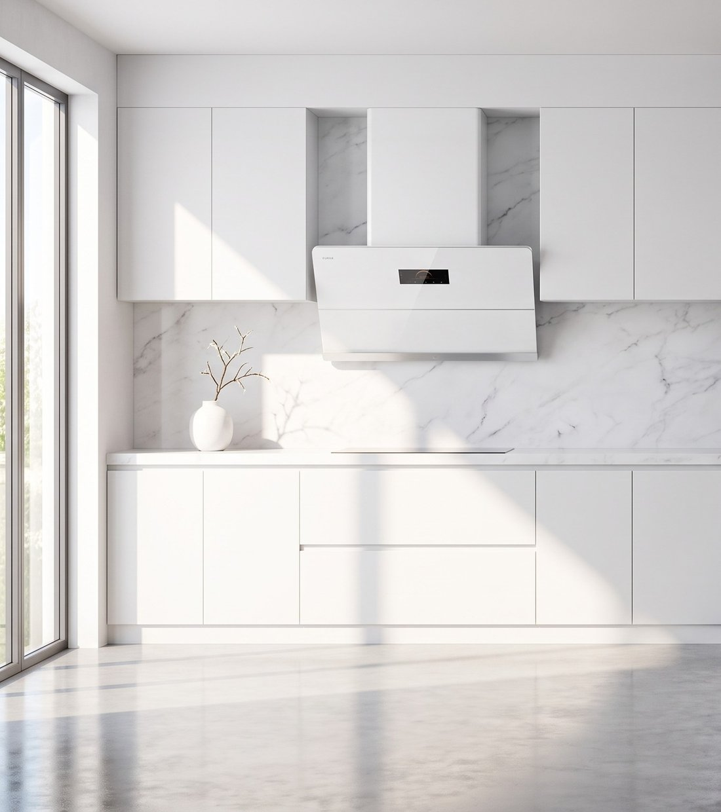

Obsidian glass. Rose-gold. A presence that only wakes after dark.
Enter the Moon →Porcelain white. Light gathered, held, and quietly given back.
Enter the Opal →A Moon Series kitchen is obsidian glass and shadow — and then a thread of rose-gold catches the one lamp still on. The dark is never only dark. That single warm line is what stops it feeling like equipment.
An Opal Series kitchen is porcelain and morning — and then a panel of black glass anchors the whole wall. The light is never only light. That one deep note is what stops it feeling like a showroom.

Obsidian glass, rose-gold detailing and a silhouette that disappears into a dark wall. The Moon Series was drawn for kitchens that are used late, lit low, and looked at as furniture rather than appliances.

Porcelain white, seamless tempered glass, a surface that takes the whole room's light and gives it back. The Opal Series was drawn for kitchens that are used first thing, in daylight, before the day has started making demands.
In the symbol, the dark half holds a spot of light and the light half holds a spot of dark. It is not decoration — it is the reason the shape holds together. The same is true of these two collections.


陽One warm metal edge across an obsidian face. In daylight you barely register it. At night it is the only thing in the room that glows.
One deep, reflective strip set into porcelain. It gives a white kitchen somewhere to rest its eye — and keeps the room from reading as a showroom.
Hover either room to open its dot — each one already contains the other.
Colour is the only argument between them. Underneath, both collections run the same three-stage fume engineering, the same motor, the same twenty years of Fotile testing.
Obsidian glass, rose-gold, and a kitchen that only shows itself after dark.
Moon Series →Porcelain white, every colour hiding inside it, waiting for the light to move.
Opal Series →